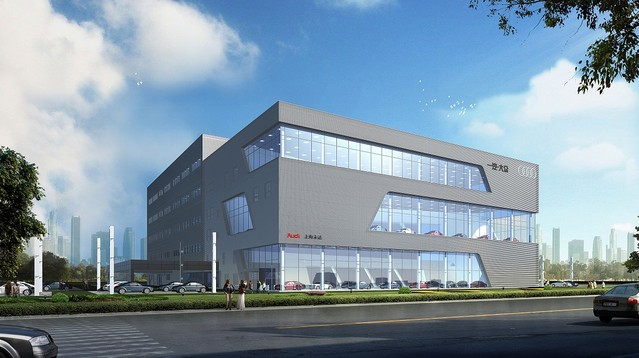

公司简介
北京万通奥迪汽车销售服务有限公司是由德国大众授权的北京奥迪4S店，是一汽-大众奥迪特许经销商，集整车销售、售后服务、备件 供应、技术咨询四位一体的奥迪专卖店。北京奥迪4S店拥有全球统一标准的奥迪展厅，占地面积6422.06平方米，紧邻八达岭高速公路，交通便利。中心拥有员工250人，汽车营销顾问和维修 业务骨干经验丰富、素质过硬。万通云员工每年均受到来自一汽-大众的专业培训和考核。北京奥迪4S店通过近十年的努力，年销售新车三千余台，维修产量六万台次;营业收入过亿，辉煌业 绩居同行业之首，各项经济指标不稳增长，突显了万通奥迪4S店雄厚的实力。2010年北京市汽车流通协会为万通奥迪4S店颁发“诚信企业”称号。